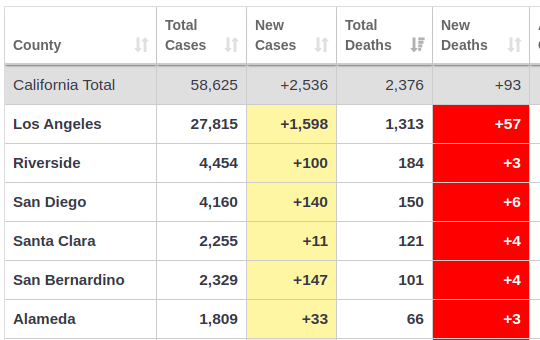

The news is reporting 75,000 deaths in the USA and to expect 130,000 deaths by August. These numbers may be true but do they justify the fear they instill? We still need to take precautions but the following will help you understand your current risk.
Today is May 5 2020 and people are starting to violate shelter in place. Builders are now working on homes without regard to 6 foot spacing, wearing masks or any of the other rules set for shelter in place. We've seen similar problems with the beaches. To better understand the risks, we need real facts to base our personal decisions.
https://www.worldometers.info/coronavirus/ gives you real facts about what is happening. The snippets below show real facts from this site which may help you make your personal decisions. Without these facts, you must rely on news reports that don't tell you the complete story.
Sadly the Center for Disease Control and the World Health Organization have failed miserably. Instead of using computers, all information is collected is collected by people from other organizations such as John Hopkins and WorldOMeter. From day 1, the CDC and WHO should have published what information is needed and how it will be collected from each of the jurisdictions.
All countries, states and regions want to report Covid-19 data but it's inconsistent. Some report all deaths as Covid-19 deaths while other only report verified Covid-19 deaths. Every entity makes this data available but not in a common method (Twitter, website, data pull or ???).
Funding for the CDC and the WHO should be withheld until they can meet their responsibility of monitoring health.
Only 132 suspected Covid-19 cases are in the hospitals which is small considering the number of beds and ventilators that are available. Shelter in place is working extremely well.
We expect deaths with Covid-19. California only has 2,376 deaths. Santa Clara County only has 121 deaths and averaging around 5 deaths per day. The majority of deaths (1,313) has occurred in Los Angeles. These are small compared to the 70,000 deaths in the USA.
Looking at a graph of the number of deaths per day, we realize that weekend deaths are counted in a weekday. Instead of watching the daily count, you must watch the 7 day moving average. Notice that the 7 day moving average hit a peak of 82 and has gone down to 73. Maybe Covid-19 is weakening or shelter in place is working very well.
From the chart, the USA has 72,271 deaths and New York state has 25,204 deaths (35%). Notice that the first 7 states are in the north east with a total of 50,554 deaths (70%). Very disturbing is Pennsylvania with 346 new deaths for a total of 3146 deaths (11% increase). Pennsylvania could be the next hot spot.
Notice the deaths/1M pop column. New York state has 1285 (1.2 deaths per 1,000 people). California has 61 (6 deaths per 10,000 people).
You can easily sort on a column by clicking on the column title.
Graph of deaths by day

Graph of hospitizations
New York state is a worst case scenario and it's doubtful we will reach those numbers.
9600 in the hospital with 3281 in the ICU (33%). 2,641 using ventilators. Santa Clara has 2 million people versus 20 million in New York State. At this time, our resources most likely will suffice.
From the chart we see that Europe has far more deaths than the USA. The total deaths for the USA is less than the first 3 European countries. The USA has 218 deaths / 1M pop which is less than half of some European countries. The UK new deaths is very concerning because it is so large compared to it's population.